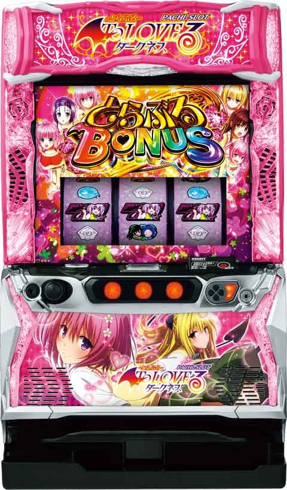

L ToLOVEるダークネス


| 種類 | 左チャ目 | 中チャ目 | 右チャ目 |
|---|---|---|---|
| 最低所持pt | |||
| チャ目 | |||
| ❤️付 | |||
| 2チャ目 | |||
| 高確帯 | |||
| 示唆出現 | |||
| CZ当選 |
状態別カスタム値設定 (タップで表示／非表示)
狙い目
実践上CZが遠い状態から打ち始めるためか期待値通りにならない可能性があるため110%ボーダーとなります。
朝イチ以外は店データ機と液晶ゲーム数が10Gズレてます。ゾーン狙いやボーダーギリギリを打つ時はご注意ください。
[リセット狙い]
積極派 100Gから
慎重派 130Gから
※当日CZ未当選の場合はボーダーを-30G下げる
[ボーナス間天井狙い]
440Gから
駆け抜け後 370Gから
※差枚プラスの場合は通常の狙い目
天井後or 650ゾーン当選後 370Gから
※650ゾーン当選は店データ機で680-690Gくらい
天井or650ゾーン当選 ＆ 駆け抜け後 210Gから
※駆け抜け後はAT性能が上がる
[有利区間の差枚で調整]
差枚がプラスだと冷遇がありそうなので、下記差枚時はボーダーを上げる。
+1000枚以上の場合は扱い不明。
+500枚から+1000枚
駆け抜け後は通常の狙い目
それ以外 +20G
+0から+500枚
駆け抜け後は通常の狙い目
それ以外 +20G
[ゾーン狙い]
250Gゾーン 245Gから
[ぷっちゅんチャレンジ間狙い］
①夕方ステージ消化、発明品チャンス10G手前から
②夕方ステージ消化、発明品チャンス20G手前から
・駆け抜け後
ぷっちゅん間 350G以上 →①
ぷっちゅん間 600G以上 →②
・駆け抜け以外後かつ差枚マイナス
ぷっちゅん間 500G以上 →①
ぷっちゅん間 700G以上 →②
・当日通常G数からぷっちゅん当選率1/1000以下 →①
かつ駆け抜け後なら →②
・前回、650Gゾーンまたは天井当選後 →②
左、中は140pt以上濃厚なら対象CZまで
右は看板やアイキャッチで100pt以上濃厚なら対象CZ当選まで。
発明品チャンスは100.300.500.700G到達時に発生する。
前任者がptで押し引きする様な知識層の場合は打たない方が無難。
[一撃枚数別狙い]
枚数引継ぎ含め、通常STは1500枚以上、もぐもぐたい焼き後は1800枚以上で有利切れしてもぐもぐたい焼きタイムに突入。
狙い方のパターンは2種類
① 即やめ台を夕方ステージ消化。何かしらCZの示唆が出たら100Gの発明品チャンス+夕方ステージまで。または80Gから発明品チャンス+夕方ステージ消化まで。
②即やめ台を100Gの発明品チャンス+夕方ステージ消化まで。
※どちらもCZまで近そうなら200G+αまで続行。
・もぐもぐたい焼き後
一撃1000-1500枚後 ①手順
一撃1500枚以上後 ②手順
・非もぐもぐたい焼き後
一撃1300枚以上 ①手順
[発明品狙い]
100Gと300Gで発明品獲得。
獲得したアイテムで押し引き。
カバネリと比較してCZが重要。
駆け抜け後以外 10G手前
駆け抜け後 20G手前
あたりから狙えそう。
ただし明らかに直前にCZ当選(特にぷっちゅんチャレンジ)している場合は狙えない可能性もある。
にゃんにゃんコピーくん
→消えるまで打ちその後CZの示唆で押し引き
ぴょんぴょんワープくん
→超高確(夜更け)移行時は抜けるまで消化
べとべとランチャーくん
→CZ突入でゲーム数ブロックのためCZ突入まで
[トランスポイント狙い]
ポイントが貯まると次回初当たりがtoloveるエピソードに突入。
アイキャッチ「白雪姫美柑」はトランスポイントMAXのため解放まで。

[ST即やめ台狙い]
即やめ台で左液晶女の子がハートに包まれてたらCZ突入濃厚。真ん中のボタンを押してチェック出来る。
[有利区間切れ狙い]
不明
やめ時
ST終了後1G回してやめ
ST終了直後に液晶左の女の子がハートに包まれてたらCZ出てくるため消化
その他
【ポイントのカウント方法】
通常ハート非点灯 1pt
通常ハート点灯 1pt
どきどき高確中 10pt
高確(夕方) 10pt
超高確(夜) 75pt
通常時複合チャンス目 5pt (高確時、どきどき高確中は更に+10pt)
ハーレム目 左20pt中20pt右150pt
にゃんにゃんコピーくん滞在時は2倍にする。
STで有利区間切った場合、ptはリセットされると思われる。
・アイキャッチまとめ

・会話演出ポイント示唆

・美柑看板演出
近 140pt以上
怪 100pt以上
「近」が出た場合はST当選後でも対象のCZ当選までは打った方が良さそう。

参考元
基本情報
- メーカー: オリンピアエステート
- 機械割: 98.0% 〜 110.1%
- 導入開始日: 2024年06月03日（月）
- ゲーム性概要: 大人気作品とのコラボで、『L ToLOVEるダークネス』が登場する。 通常時はチャンス目で規定ポイントを貯めつつCZからSTを目指すゲーム性。ST中はチャンス目と共通ベルでボーナスを抽選して、見事ヒロインをすべて攻略（最大6連）で上位STへ突入する。


打ち方
打ち方・小役
打ち方（小役狙い）
［最初に狙う絵柄］

通常時・ST中・ボーナス中ともにナビ非発生時はオールフリー打ちでOK。押し順ナビ発生時は押し順に従って消化しよう。
［チャンス目］

各リールにチャンス目対象の絵柄が停止かつ、リプレイorベルが揃わなければチャンス目。チャンス目対象の絵柄が2つならダブルチャンス目、3つ止まればハーレム目となる。
変則押しはNG

ナビ非発生時は左1stでの消化を推奨だ。
解析情報通常時
小役関連
小役確率
| 役 | 確率 |
|---|---|
| リプレイ | 1/16.7 |
| 左チャンス目 | 1/32.0 |
| 中チャンス目 | 1/40.0 |
| 右チャンス目 | 1/68.0 |
| 左＆中ダブルチャンス目 | 1/512.0 |
| 左＆右ダブルチャンス目 | 1/512.0 |
| 中＆右ダブルチャンス目 | 1/512.0 |
| ハーレム目 | 1/5461.3 |
| 共通ベル（ナビなしベル）合算 | 1/8.5 |
| チャンス目合算 | 1/13.0 |
| ナビなし時小役揃い合算 | 1/3.9 |
内部状態関連
内部状態概要
通常時の内部状態は通常＜高確＜超高確の3種類で、滞在状態に応じてチャンス目成立時に獲得するどきどきポイントの量が変化。楽園計画終了時と100Gゲーム消化ごとに必ず高確へ移行する。
高確ゲーム数振り分け
| 契機 | 高確20G | 高確30G |
|---|---|---|
| 楽園計画終了後 | ー | 100% |
| 100G消化時 （100～900G） | 69.9% | 30.1% |
トランスポイント
トランスポイント概要

CZ失敗時や楽園計画が単発で終了した場合に内部的に蓄積されるポイント。100ptに到達すると次回初当り時にToLOVEるエピソードに当選する。設定変更時は初期ポイント抽選がおこなわれる。
トランスポイント性能
| 項目 | 内容 |
|---|---|
| 獲得契機 | 設定変更時、CZ失敗後、楽園計画単発終了後、 CZ成功確定後の小役抽選 |
| 100pt獲得時の恩恵 | 次回初当りがToLOVEるエピソード （ヤミエピソードの可能性もあり） |
CZ中のトランスポイント加算当選率
CZのきゅんきゅんバルーン成功確定後（7揃い後）の 1G間の成立役 、ときめきスイートの内部的に 成功確定後の成立役 、ぷっちゅんチャレンジの 成功契機役 でトランスポイントの獲得を抽選。 当選率は低いが、この抽選に当選した場合、100ptを獲得するのでToLOVEるエピソード当選が確定する。
ハーレム目はときめきスイートとぷっちゅんチャレンジ中に引けば、成功確定後でなくとも、トランスポイント100pt獲得確定だ。
契機別トランスポイント100pt当選率
| 役 | 当選率 |
|---|---|
| 下記以外 | 0.4% |
| チャンス目1個 | 0.8% |
| ダブルチャンス目 | 1.2% |
| ハーレム目 | 100% |
チャンス目
チャンス目の抽選

チャンス目は左・中・右の3種類（リール左側に表示）があり、各チャンス目を引くごとにポイントが蓄積されていき、 規定ポイントに到達したらチャンス目に対応したCZに発展 。もちろんチャンス目のダブル停止は大量ポイント獲得、トリプル停止時（ハーレム目）は大量ポイント獲得＋αに期待できる。 チャンス目確率は 約1/13 。
［チャンス目のキャラはCZごとに変化］

各チャンス目は2人1組で、右チャンス目ならヤミ→モモというようにCZに当選するごとに入れ替わる。ヒロインが変化するのはあくまで演出なので期待度差などはない。
どきどきポイント

チャンス目成立時は、チャンス目の種類に対応したどきどきポイントを1pt以上獲得。150ptに到達するとCZへ突入する。上位の内部状態（通常＜高確＜超高確）に滞在しているほど、大量ポイントを獲得しやすい。
なお、 CZ終了後は初期ポイントを多く獲得する場合がある ので、早い段階でCZに当選することもある。
どきどきポイント性能
| 項目 | 内容 |
|---|---|
| 獲得契機 | チャンス目成立時（1pt以上） |
| 150pt到達時 | 該当するチャンス目のCZへ |
| リセット契機 | もぐもぐたい焼きタイム終了後 ※STやCZではクリアされない |
内部状態ごとの最低獲得量
| 内部状態 | 内容 |
|---|---|
| 通常 | 1pt以上 |
| 高確（夕方） | 10pt以上 |
| 超高確（夜更け） | 75pt以上 |
通常滞在時は、リール左のキャラアイコンが点灯すると大量ポイント獲得に期待できる。
どきどき高確

どきどき高確移行率
| 契機 | 移行率 |
|---|---|
| チャンス目成立 | 19.9% （30G継続） |
チャンス目成立時の一部でどきどき高確へ突入。滞在中はチャンス目成立時に追加で10pt以上を獲得する。
発明品
発明品概要

規定ゲーム数消化時などに獲得できるアイテムで、基本的にCZを有利に進めるアイテムをゲット。なかにはボーナス直撃が確定するアイテムもある。 100G、300G、500G、700G消化時は発明品チャンスが発生して、発明品を獲得する。
発明品一覧（通常時）
| 発明品 | 効果 |
|---|---|
| にゃんにゃんコピーくん | チャンス目成立時のポイント獲得量が2倍 |
| べとべとランチャーくん | CZのゲーム数減算が一定ゲーム数間ストップ |
| ぴょんぴょんワープくん | ステージ移行（内部状態昇格、前兆移行） |
発明品振り分け
| 発明品 | 振り分け |
|---|---|
| にゃんにゃんコピーくん | 83.6% |
| べとべとランチャーくん | 6.2% |
| ぴょんぴょんワープくん | 10.2% |
追憶の闇（ゲーム数前兆）
追憶の闇概要

ゲーム数消化から突入する前兆ステージ。ラストの連続演出に成功すればボーナスが確定する。
おでかけステージ（CZ前兆）
おでかけ概要

チャンス目を契機に移行する前兆ステージ。最終的にチャンス目のキャラとデートできればCZに突入する。
CZ共通
CZ確率
| CZ | 確率 |
|---|---|
| きゅんきゅんバルーン | 1/417.9 |
| ときめきスイート | 1/528.6 |
| ぷっちゅんちゃれんじ | 1/742.4 |
| CZ合算 | 1/177.6 |
きゅんきゅんバルーン（CZ）
きゅんきゅんバルーン概要

6G＋α間、小役を揃えるごとにバルーンが昇格。終了時はバルーンの色を参照してボーナス当選をジャッジ。小役成立時はバルーンが昇格するだけでなく、ゲーム数も1G加算されるため、終了間際でも小役さえ連打できれば期待できる。
きゅんきゅんバルーン性能
| 項目 | 内容 |
|---|---|
| 当選契機 | 左チャンス目の規定ポイント到達 |
| 継続ゲーム数 | 6G＋α |
| 当選確率 | 1/417.9 |
| ボーナス期待度 | 約33% |
| 消化中の抽選 | 小役入賞でバルーンが昇格かつCZゲーム数＋1G |
［バルーンの色］

色で期待度を示唆。金まで行けばボーナス濃厚！
［最終ジャッジ］

終了後は逆押しカットインで7が揃えばボーナスだ。
成功抽選
小役が揃うたびにバルーンの色がランクアップし、最終的なランクで初当りをジャッジ。ランク6（金のバルーン）まで到達すれば楽園計画確定だ。 ランク6到達後は、小役揃い（ランクアップ抽選に当選）のたびにかちこちカッチンくんをストックする。
小役揃い時・ランクアップ数振り分け
| 役 | ＋1ランク | ＋2ランク | ＋3ランク | ＋6ランク |
|---|---|---|---|---|
| リプレイ・ベル | 99.6% | 0.4% | ー | ー |
| チャンス目1個停止 | 89.8% | 9.8% | 0.4% | ー |
| ダブルチャンス目 | ー | 50.0% | 50.0% | ー |
| ハーレム目 | ー | ー | ー | 100% |
※ハーレム目は成功確定かつ、かちこちカッチンくんを1個以上ストック
ランク（バルーン色）ごとの成功率
| ランク（色） | 成功率 |
|---|---|
| ランク1（白） | 3.1% |
| ランク2（青） | 4.7% |
| ランク3（緑） | 12.5% |
| ランク4（赤） | 50.0% |
| ランク5（紫） | 80.1% |
| ランク6（金） | 100% |
ときめきスイート（CZ）
ときめきスイート概要

5G/セットのST型CZで、小役を引くごとにゲーム数がリセット。成立役に応じて進行するコマ数（デートスポット）が変化していく。最終的に終了時（5G間小役非成立）のデートスポットでボーナス当選をジャッジする。
ときめきスイート性能
| 項目 | 内容 |
|---|---|
| 当選契機 | 中チャンス目の規定ポイント到達 |
| 継続ゲーム数 | 5G連続の小役非入賞まで |
| 当選確率 | 1/528.6 |
| ボーナス期待度 | 約40% |
| 消化中の抽選 | 小役入賞で5G再セット |
［砂時計とデートスポット］

［最終ジャッジ］

現在いるデートスポットでボーナス当落をジャッジする。
成功抽選
到達したマスに応じて成功を抽選。内部的に失敗の場合は最終ジャッジ中の小役で書き換えが抽選される。
小役揃い時・マス進行数振り分け
| 進行数 | リプレイ ベル | チャンス目 1個停止 | ダブル チャンス目 | ハーレム目 |
|---|---|---|---|---|
| 1マス | 98.0% | 53.5% | ー | ー |
| 2マス | 1.6% | 37.1% | 50.0% | ー |
| 3マス | 0.4% | 9.4% | 35.9% | ー |
| 4マス | ー | ー | 5.9% | ー |
| 5マス | ー | ー | 1.2% | ー |
| 6マス | ー | ー | 1.2% | ー |
| 7マス | ー | ー | 1.2% | ー |
| 8マス | ー | ー | 4.7% | 100% |
マスの色（デートスポット）ごとの成功率
| 到達マス（色） | 成功率 |
|---|---|
| 1～3マス目（白） | 10.2% |
| 4～5マス目（青） | 33.2% |
| 6～7マス目（緑） | 50.0% |
| 8マス目（赤） | 80.1% |
| 9マス目（金） | 100% |
内部的に失敗時・逆転当選率
| 役 | 当選率 |
|---|---|
| 下記以外 | 0.4% |
| 左チャンス目 | 3.1% |
| 中チャンス目 | 3.9% |
| 右チャンス目 | 4.7% |
| ダブルチャンス目 | 33.2% |
| ハーレム目 | 100% |
ぷっちゅんちゃれんじ（CZ）
ぷっちゅんちゃれんじ概要

7G間、成立役に応じて毎ゲームボーナスを抽選する高期待度CZ。プチュンすればボーナス濃厚となる。
ぷっちゅんちゃれんじ性能
| 項目 | 内容 |
|---|---|
| 当選契機 | 右チャンス目の規定ポイント到達 |
| 継続ゲーム数 | 7G固定 |
| 当選確率 | 1/742.4 |
| ボーナス期待度 | 約70% |
| 消化中の抽選 | 毎ゲーム成立役に応じてボーナス抽選 |
［セリフの色で期待度示唆］

赤文字ならチャンス！
［プチュン］

プチュンするタイミングも多彩だ。
成功抽選
7G間、全役で成功を抽選。チャンス目は成功確定だ。
ぷっちゅんちゃれんじ・成功当選率
| 役 | 当選率 |
|---|---|
| 下記以外 | 8.6% |
| チャンス目（位置・個数不問） | 100% |
天井
天井ゲーム数
最大天井は999G＋αだが、設定変更後は最大650G＋αに短縮。設定変更時は通常ゲーム数がランダムに加算されるので、さらに早いゲーム数で楽園計画に当選する。 最大天井以外のゲーム数でも楽園計画に当選する可能性があり、 高設定ほどゲーム数契機で当たりやすい 。
演出動画
ロングフリーズ
ボーナス当選時の一部で発生。エピソード消化後は特化ゾーンのダークネス計画を経由して、楽園計画（ST）がスタートする。
解析情報ボーナス時
楽園計画（ST）
ST概要

STは10G＋αで、チャンス目や共通ベルでボーナスを抽選。STはセットごとに攻略対象ヒロインが決まっていて、 ヒロインに対応したチャンス目を引けばボーナスの大チャンス となる。ヒロインはセット継続すると変化していき、3人攻略（3セット継続）で、上位STのハーレムモード移行のチャンス、6人攻略（6セット継続）でハーレムモード突入が確定する。 リプレイ成立時はお友達召喚（ミッション）が抽選される。
楽園計画（ST）性能
| 項目 | 内容 |
|---|---|
| 当選契機 | 初当りボーナス後 |
| 継続ゲーム数 | 10G＋α |
| ボーナス期待度 | 約52% |
| 消化中の抽選 | チャンス目・共通ベルでボーナス抽選、 リプレイでお友達召喚（ミッション）抽選 |
| 備考 | 3セット継続でハーレムモードのチャンス、 6セット継続でハーレムモード確定 |
「モード選択」

左右キーでノーマル、違和感、先告知の3種類から告知モードを選択できる。
［攻略対象のヒロイン］

液晶内にどのチャンス目が期待できるのかが表示されるのでわかりやすい。
［お友達召喚］

ミッション内容をクリアできればボーナス。ミッション内容は全部で5種類で、チャンス目を引いた場合はミッションの内容不問で成功確定となる。
［ヒロインコンプリート］

6人を攻略できればハーレムモードへ！
ボーナス回数別・ハーレムモード突入期待度（設定2）
| ボーナス回数 | 期待度 |
|---|---|
| 1回目 | 低 |
| 2回目 | 低 |
| 3回目 | 約34% |
| 4回目 | 中 |
| 5回目 | 中 |
| 6回目 | 確定 |
［通常の楽園計画中］ボーナス当選率
| 役 | 攻略対象キャラ（液晶のキャラ） | ||
|---|---|---|---|
| 役 | ララorナナ | 春菜or唯 | モモorヤミ |
| 左チャンス目 | 69.0% | 35.0% | 43.0% |
| 中チャンス目 | 35.0% | 75.0% | 43.0% |
| 右チャンス目 | 35.0% | 35.0% | 100% |
| ダブルチャンス目 | 100% | 100% | 100% |
| ハーレム目 | 100% | 100% | 100% |
| 共通ベル | 15.9% | 15.9% | 15.9% |
※液晶にいるキャラは左から順に左・中・右チャンス目対応のキャラ ※発明品のピタピタくっつくん所有時はすべてのチャンス目がボーナス確定
［ハーレムモード中］ボーナス当選率
| 役 | 攻略対象キャラ不問 |
|---|---|
| 左チャンス目 | 50.0% |
| 中チャンス目 | 50.0% |
| 右チャンス目 | 100% |
| ダブルチャンス目 | 100% |
| ハーレム目 | 100% |
| ナビなしベル揃い | 15.9% |
ミッション当選率
| お友達召喚システム | リプレイ以外 | リプレイ |
|---|---|---|
| ナシ | ー | 52.1% |
| アリ | 40.2% | 100% |
メモリアルボーナス（初当り）
メモリアルボーナス概要

初当りのメインとなるボーナスで、終了後は必ずSTに突入。消化中はSTを有利に進めるアイテム獲得が抽選される。
メモリアルボーナス性能
| 項目 | 内容 |
|---|---|
| 当選契機 | CZ成功、規定ゲーム数消化時 |
| 継続ゲーム数 | 100枚獲得まで |
| 1Gあたりの純増 | 約6.6枚 |
| ST突入率 | 100% |
| 消化中の抽選 | 発明品獲得を抽選 |
ToLOVEるエピソード（初当り）
ToLOVEるエピソード概要

ST＋STのVストック1個以上が確定するボーナス。ヤミエピソードならダークネス計画（STゲーム数上乗せ特化ゾーン）移行も確定する。
ToLOVEるエピソード性能
| 項目 | 内容 |
|---|---|
| 当選契機 | メモリアルボーナス（初当り）当選時の一部 |
| 継続ゲーム数 | 20G |
| 1Gあたりの純増 | 約6.6枚 |
| ST突入率 | 100% |
| 消化中の抽選 | 発明品獲得を抽選 |
| 備考 | STのVストック獲得 |
［ヤミエピソード］

とらぶるボーナス（ST中ボーナス）
とらぶるボーナス概要

ボーナスは枚数管理型で、ボーナス当選後の「枚数決定ゾーン」で枚数を決定。消化中は成立役に応じて「発明品ポイント」が抽選され、 10pt貯まるごとにSTを有利に進める「発明品」をゲット できる。
とらぶるボーナス性能
| 項目 | 内容 |
|---|---|
| 当選契機 | ST中のボーナス |
| 獲得枚数 | 100枚～1600枚（枚数決定ゾーンで決定） |
| 1Gあたりの純増 | 約6.6枚 |
| 消化中の抽選 | 発明品獲得を抽選 |
ボーナス平均獲得枚数
| 状況 | 枚数 |
|---|---|
| ハーレムモード以外 | 375.2枚 |
| ハーレムモード中 | 650.0枚 |
［チャンス目のヒキが重要］

チャンス目は発明品ポイント獲得濃厚だ。
発明品
とらぶるボーナス中に獲得できるアイテムで、ゲットするほどSTを有利に進めることができる。ST巻き戻し（再セット）やボーナスが確定するアイテムも存在する。
発明品一覧（ST中）
| 発明品 | 効果 |
|---|---|
| お友達召喚システム | リプレイ成立でミッション確定 リプレイ以外でもミッション抽選をおこなう |
| ピタピタくっつくん | チャンス目成立でボーナス確定 |
| かちこちカッチンくん | STのゲーム数減算がストップ |
| モドリスカンク | STが終了した場合にゲーム数を巻き戻し |
| Vストック | ST終了時にボーナス放出 |
| ハーレムモード | ハーレムモード突入 |
［お友達召喚システム］

［ピタピタくっつくん］

［かちこちカッチンくん］

［モドリスカンク］

［Vストック］

［ハーレムモード］

ボーナス中・発明品ポイント獲得率＆振り分け
| ポイント | チャンス目 以外 | チャンス目 1個停止 | ダブル チャンス目 | ハーレム目 |
|---|---|---|---|---|
| ＋1pt | 0.4% | 92.2% | ー | ー |
| ＋2pt | ー | 6.3% | ー | ー |
| ＋3pt | ー | 0.8% | 98.8% | ー |
| ＋5pt | ー | 0.4% | 0.8% | ー |
| ＋10pt | ー | 0.4% | 0.4% | 100% |
| トータル | 0.4% | 100% | 100% | 100% |
発明品振り分け
| 発明品 | 振り分け |
|---|---|
| かちこちカッチンくん | 71.1% |
| お友達召喚システム | 16.0% |
| ピタピタくっつくん | 12.2% |
| モドリスカンク | 0.4% |
| Vストック | 0.4% |
※ハーレム目成立時はVストック確定
お友達召喚システム、ピタピタくっつくん、モドリスカンクは1個しか所持できないため、獲得後は振り分けがほかのアイテムにまわる。
枚数決定ゾーン
ばいんアタック概要

枚数期待度低めのゾーン。ばいんだけに、ボタン長押しで成功するごとに枚数が倍（倍ん）になっていくゲーム性。ばいんアタックと思いきや、800枚or1600枚が確定する「ウィスパー演出」が発生することもある。
ばいんアタック性能
| 項目 | ウィスパー演出非発生時 | ウィスパー演出発生時 |
|---|---|---|
| 上乗せ枚数 | 100枚～1600枚 | 800枚or1600枚 |
| 平均獲得上乗せ枚数 | 251.6枚 | 1200枚 |
ウィスパー演出発生時の上乗せ枚数振り分け
| 枚数 | 振り分け |
|---|---|
| ＋800枚 | 50.0% |
| ＋1600枚 | 50.0% |
［枚数が倍にアップ］

［ウィスパー演出］

ぺろぺろちゃんす概要

マロン（犬）が女の子をぺろぺろするほど枚数が増えていくボタン連打タイプの枚数決定ゾーンだ。
ぺろぺろちゃんす性能
| 項目 | 内容 |
|---|---|
| 上乗せ枚数 | 300枚以上 |
| 平均獲得上乗せ枚数 | 390.3枚 |
［ぺろぺろが続くほど枚数アップ］

愛すぷラッシュ概要

500枚以上が確定する枚数決定ゾーン。複数のトリガー（バストやヒップ）で枚数を上乗せした後、さらにボタン連打で枚数を上乗せしていくゲーム性となる。
愛すぷラッシュ性能
| 項目 | 内容 |
|---|---|
| 上乗せ枚数 | 500枚以上 |
| 平均獲得上乗せ枚数 | 638.8枚 |
［トリガーでの上乗せ］

［ボタン連打の上乗せ］

［通常の楽園計画中］枚数決定ゾーンの選択比率
| 枚数決定ゾーン | 比率 |
|---|---|
| ばいんあたっく | 42.9% |
| ウィスパー演出 | 出現の可能性あり |
| ぺろぺろちゃんす | 37.5% |
| 愛すぷラッシュ | 19.0% |
※ばいんあたっくの一部でウィスパー演出が発生
ダークネス計画
ダークネス計画概要

STのゲーム数を上乗せする特化ゾーン。上乗せしたゲーム数を使い切るまでSTの基本ゲーム数は使用されない。もちろんボーナスを引いても、残りゲーム数は次のSTに引き継がれる。
ダークネス計画性能
| 画面 | 示唆 |
|---|---|
| 突入契機 | トランスポイント解放時の一部 |
| 継続ゲーム数 | 5G |
| 消化中の抽選 | 楽園計画のゲーム数加算を抽選 |
| 終了後 | 45Gのエピソードを消化後楽園計画へ |
［毎ゲーム上乗せを抽選］

ハーレムモード（上位ST）
ハーレムモード概要

継続期待度が約80%となるうえ、枚数決定ゾーンが「愛すぷラッシュ」以上となるため、ボーナスの平均枚数が約650枚になる強力な上位ST。エンディングに到達すれば引き戻し確定の「もぐもぐたい焼きタイム」に移行するため、ボーナスを経て再度ハーレムモードに突入する（エンディング未到達でも、もぐもぐたい焼きタイム突入の可能性あり）
ハーレムモード性能
| 項目 | 内容 |
|---|---|
| 当選契機 | 3セット継続時の一部、ST6セット継続時など |
| 継続ゲーム数 | 10G＋α |
| ボーナス期待度 | 約80% |
| 期待獲得枚数 | 3000枚以上 |
| 消化中の抽選 | チャンス目・共通ベルでボーナス抽選、 リプレイでお友達召喚（ミッション）抽選 |
| 備考 | 滞在中のボーナスは平均650枚 |
もぐもぐたい焼きタイム
もぐもぐたい焼きタイム概要

おもにエンディング後に移行する32G間の発明品獲得特化ゾーンで、終了後はボーナス当選確定＝ハーレムモード突入が確約される。
もぐもぐたい焼きタイム性能
| 項目 | 内容 |
|---|---|
| 当選契機 | エンディング到達後など |
| 継続ゲーム数 | 32G |
| 期待獲得枚数 | 3000枚以上 |
| 消化中の抽選 | 高確率で発明品を獲得 |
| 備考 | 終了後はとらぶるボーナスを経由して ハーレムモードへ移行 |
［発明品はボーナス中と共通］

発明品獲得時の振り分け
獲得時はまず、Vストック or Vストック以外のどちらになるかを抽選し、Vストック以外が選ばれた場合はとらぶるボーナス中と同様の振り分けで発明品の種類が抽選される。
発明品獲得時の振り分け
| 役 | Vストック | Vストック以外 |
|---|---|---|
| チャンス目1個 | 1.2% | 98.8% |
| ダブルチャンス目 | 12.5% | 87.5% |
| ハーレム目 | 100% | ー |
Vストック以外選択時・発明品振り分け
※とらぶるボーナス中と同じ振り分け
ツラヌキ・有利区間
ツラヌキ条件と恩恵
| 項目 | 内容 |
|---|---|
| 条件 | エンディング到達後など |
| 恩恵 | もぐもぐたい焼きタイム突入 もぐもぐたい焼きタイム概要はコチラ |
エンディング到達後は有利区間がリセットされ「もぐもぐたい焼きタイム」へ突入。32G間、発明品を高確率で獲得できるうえ、終了後はボーナスを経てハーレムモードに突入する。
演出情報
通常時
ステージ解説
「昼」

通常ステージ。
「夕暮れ」

高確示唆ステージ。
「夜更け」

超高確示唆ステージ。
どきどきポイント・天井・トランスポイント示唆
「アイキャッチ」

通常時のアイキャッチでは、どきどきポイントの蓄積量や天井到達期待度、トランスポイント量などを示唆する。
「会話演出の文字色」

通常時の会話演出の文字色が変化すれば、対応するどきどきポイントが140pt以上貯まっていることを示唆。ピンク文字は左チャンス目、緑文字は中チャンス目、紫文字は右チャンス目に対応している。
「美柑看板演出の文字」


液晶左に出現する美柑が持つ看板の文字に注目。「怪」ならポイント蓄積期待度中〜大、「近」なら140pt以上蓄積を示唆する。
※画像はキュインちゃんねる@HEIWA(ハルルナ)のものを使用しています
楽園計画（ST）
楽園計画中の違和感演出一覧
| No. | 演出 |
|---|---|
| 1 | 下パネル点滅 |
| 2 | BGMストップ |
| 3 | 上パネル消灯 |
| 4 | 上部ランプ高速点滅 |
| 5 | 枠ランプ虹 |
| 6 | 全ランプ消灯 |
| 7 | レバーON時にマロンのボイス |
| 8 | レバーON時に各キャラのボイス |
| 9 | 停止音「ばいばいアップくん」 |
| 10 | Vボタン内の赤丸のみ点灯 |
| 11 | Vボタンが一瞬開閉 |
| 12 | PUSHが振動 |
| 13 | パオーン音 |
違和感モード中は上記違和感演出の発生率がアップ。違和感演出自体はノーマルモードでも発生する可能性がある。
裏ボタン
楽園計画中の裏ボタン別・告知パターン
| 押したボタン | 告知パターン |
|---|---|
| PUSHボタン | ボーナス時の約50%でPUSHボタンが振動 |
| 左右キー | ボーナス時の約75%で告知音が発生 |
| 上下キー | ボーナス時の約75%でランプが消灯 |
| 決定キー | ボーナス時の約99%でボイスが発生 |
レバーON後、第1停止ボタンを押すまでにいずれかのボタンを押すと、ボーナス当選時に専用の告知が発生する可能性あり。決定キー（上下左右キーの右側にある赤いボタン）はほぼボイスが発生するので、実質的には一発告知のような使い方ができる。